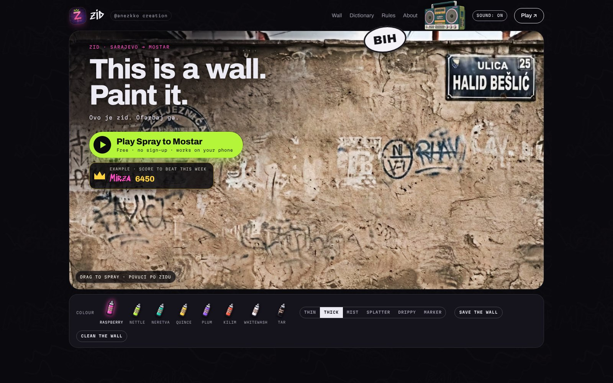
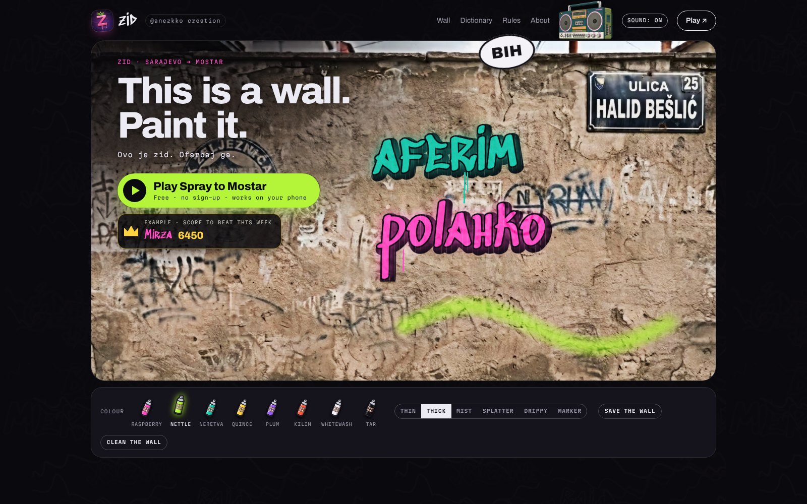
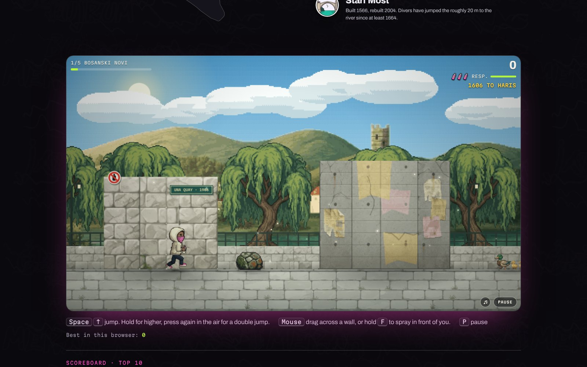
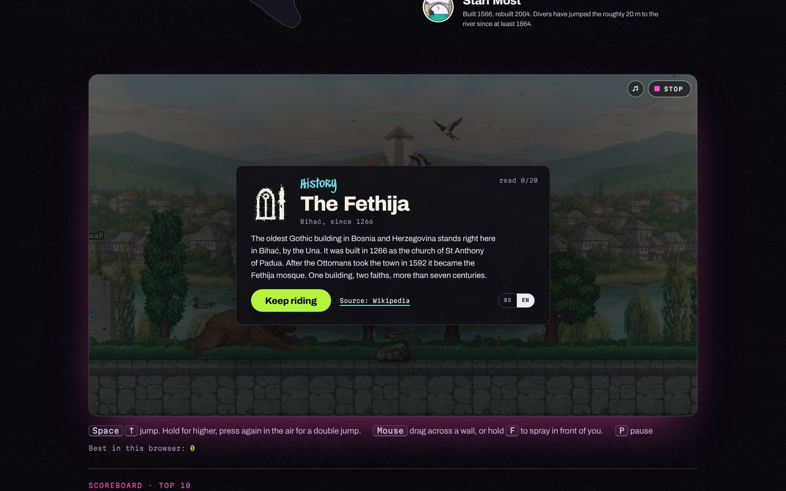
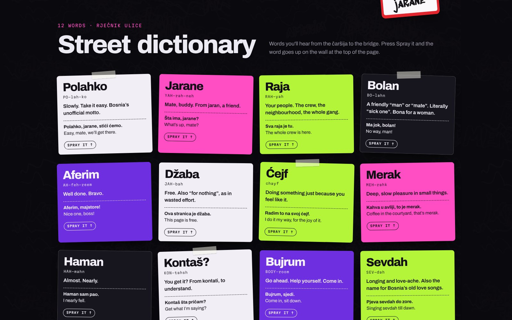
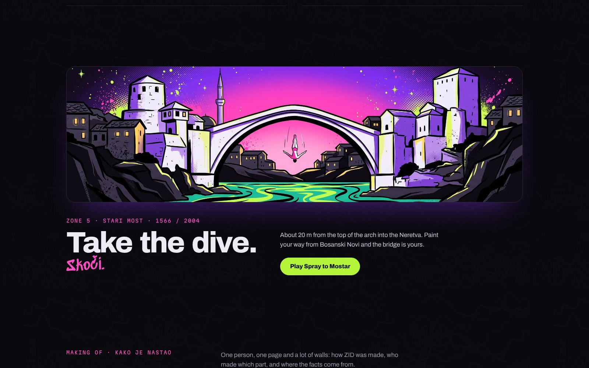

Press kit · za novinare
ZID
A free, bilingual page about Bosnian street walls: a wall to spray, a game to Mostar, a calm ride through Bihać. Everything here is free to use when writing about ZID.
Besplatna dvojezična stranica o bosanskim uličnim zidovima. Sve na ovoj stranici slobodno koristi kad pišeš o ZID-u.
In 50 words · u 50 riječi
English
ZID is a free, bilingual web page about Bosnian street walls. Spray paint on a real wall, learn twelve words of street slang, then play Spray to Mostar, a pixel-art run from Bosanski Novi to the dive off the Stari Most. No sign-up, no ads, no cookies. By @anezkko.
Bosanski
ZID je besplatna dvojezična stranica o bosanskim uličnim zidovima. Ofarbaj pravi zid sprejom, nauči dvanaest riječi uličnog slenga, pa zaigraj Sprej do Mostara, piksel-art trku od Bosanskog Novog do skoka sa Starog mosta. Bez registracije, bez reklama, bez kolačića. Autor: @anezkko.
In 150 words · u 150 riječi
English
ZID (Bosnian for “wall”) is a free, bilingual page about Bosnian street walls, made by @anezkko. It opens on a real wall you can spray, with eight colours, six paint styles and paint that sinks into the plaster. Then comes Spray to Mostar, a pixel-art game across five zones from Bosanski Novi to the Stari Most: paint the concrete, leave the old stone and the stećci alone, jump the bears, and finish with a dive into the Neretva. Mirna vožnja: Bihać is a calm ride along the Una with twenty short memos on history, the war and Bosnian talent, each linked to its source. Radio ZID plays five stations composed in code, with no licensed music. The page works on any phone or computer, works offline once loaded, installs as an app, and asks for nothing: no sign-up, no ads, no cookies. The weekly scoreboard is optional: your name only goes up if you type one.
Bosanski
ZID je besplatna dvojezična stranica o bosanskim uličnim zidovima, autora @anezkko. Otvara se pravim zidom koji možeš farbati: osam boja, šest vrsta spreja i boja koja se upija u malter. Zatim dolazi Sprej do Mostara, piksel-art igra kroz pet zona od Bosanskog Novog do Starog mosta: farbaj beton, ne diraj stari kamen i stećke, preskači medvjede i na kraju skoči u Neretvu. Mirna vožnja: Bihać je lagana vožnja uz Unu sa dvadeset kratkih bilješki o historiji, ratu i bosanskim talentima, svaka s linkom na izvor. Radio ZID svira pet stanica napisanih kao kod, bez licencirane muzike. Stranica radi na svakom telefonu i računaru, radi i bez interneta kad se jednom učita, instalira se kao aplikacija i ništa ne traži: bez registracije, bez reklama, bez kolačića. Sedmična tabela je neobavezna: tvoje ime ide gore samo ako ga upišeš.
Fact sheet · činjenice
- Name
- ZID · zidbosna.comzid = wall
- Made by
- @anezkko · 2026
- Price
- Free. No sign-up, no ads, no cookies.Džaba. Bez registracije, reklama i kolačića.
- Languages
- Bosnian and English, switchable at any timebosanski i engleski
- The game
- Sprej do Mostara / Spray to Mostar: 5 zones, Bosanski Novi → Stari Most
- The ride
- Mirna vožnja: Bihać: 20 memos, each with a linked source
- The words
- 12 street words with pronunciation and examples
- The wall
- 8 colours, 6 paint styles, save your wall as a picture
- Music
- Radio ZID: 5 stations made in code, no licensed tracks
- Plays on
- Any modern browser, phone or computer. Installs as an app, works offline after the first visit.
- Accessibility
- Keyboard play and painting, screen-reader announcements, reduced-motion support
- Built with
- Plain HTML, CSS and JavaScript, no framework, hosted on GitHub Pages
Screenshots · slike

The wall · zid 
Sprayed · ofarbano 
Spray to Mostar, zone 1 · Sprej do Mostara 
The Bihać ride · Mirna vožnja: Bihać 
Street dictionary · rječnik ulice 
The finale · Stari most


Logo and files · logo i fajlovi


Please keep the logo as it is: the pink Z with the lime crown and drips, on its purple wall.
Contact · kontakt
[Your contact for press: an email address or a social handle.]